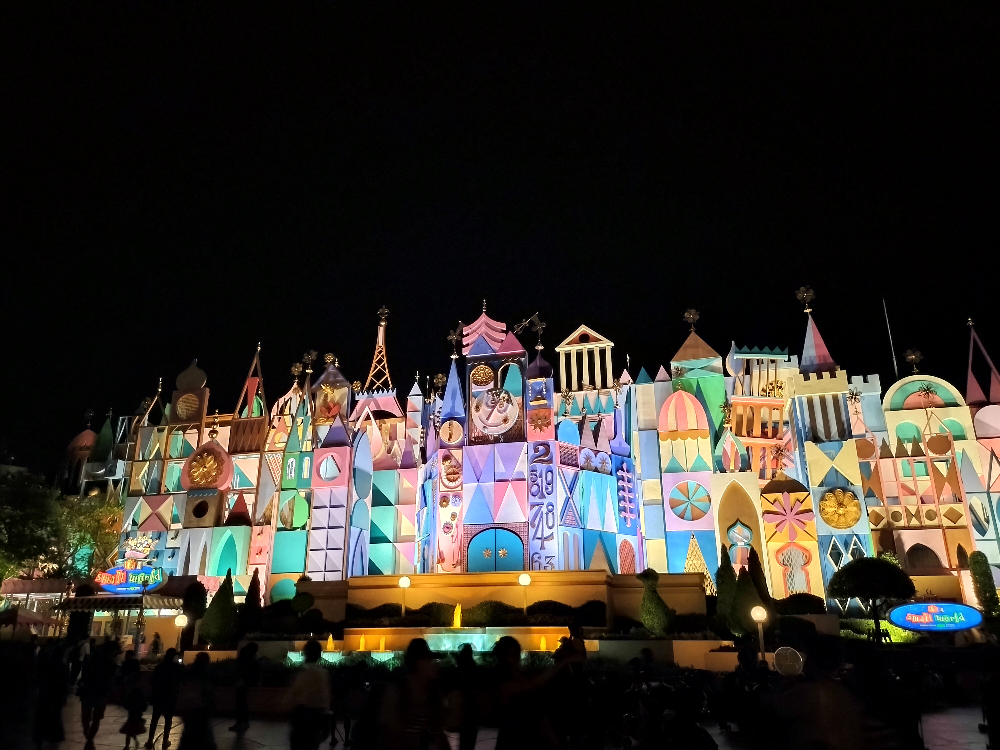

it's a small worldについて
it's a small worldとは
このページは、各国のディズニーのパーク内にあるit's a small worldというアトラクションを紹介するためのページです。

東京ディズニーランドのit's a small world（ページ作成者 撮影）
- 誕生：1964年
- 背景：1964年から1965年にかけて開催されたニューヨーク世界博覧会のパビリオンの1つとして、ウォルト・ディズニーが国連児童基金（ユニセフ）への支援の一環として自ら監修したアトラクション施設
約1年間の期間に1,000万人以上もの人々が体験した
- 移設：博覧会終了後はアナハイム（カリフォルニア）のディズニーランドに移設された
- 名称：一番初めの文字を大文字にするのが英語の基本だが、"小さな世界"なので"it's a small world"と最初の"i"も小文字になっている
- 音楽：兄のロバート・シャーマンと弟のリチャード・シャーマンのシャーマン兄弟が手がけた
- デザイン：メアリー・ブレアが手がけた
参考ページ
- ウォルト・ディズニー・ジャパン株式会社. ニュース.
https://www.disney.co.jp/corporate/news/2024 （参照日 2025-12-15）
- 東京ディズニーリゾート. イッツ・ア・スモールワールドwithグルート.
https://www.tokyodisneyresort.jp/treasure/smallworldwithgroot/ （参照日 2025-12-15）